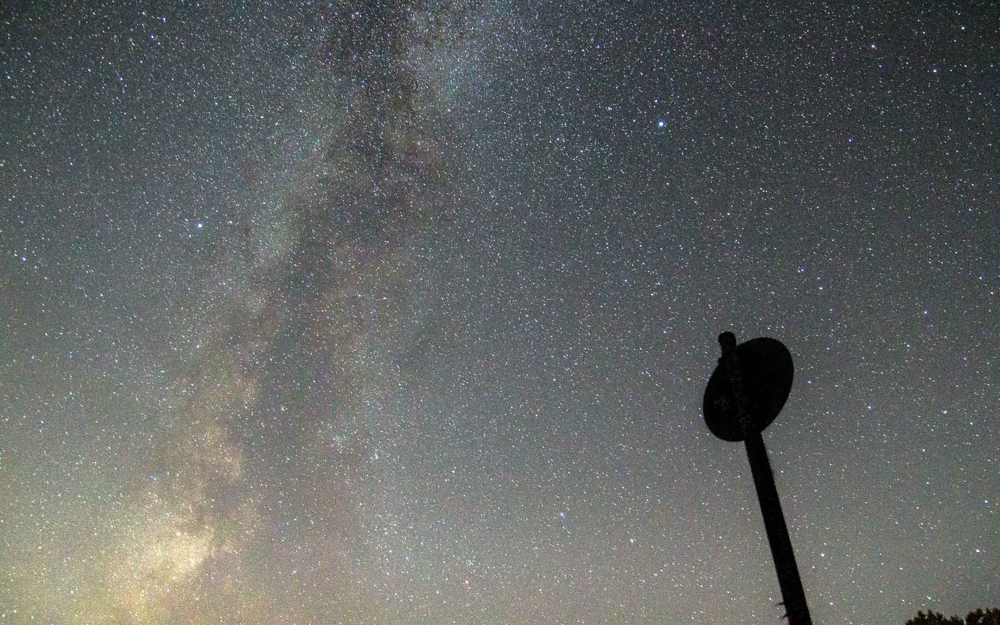

Kontakt
Kategorien
Start
Kontakt
Kategorien
Start
Die letzte, der drei Haupteinstellungen die wir gerade besprechen, ist der ISO-Wert.
Dieser beschreibt die Lichtempfindlichkeit des Kamerasensors.
Je höher der Wert ist, desto heller wird das Bild.
Allerdings muss dabei beachtet werden, dass das Bild verrauscht wird, je höher der Wert ist, also die Bildqualität stark leidet.
Auf folgendem Bild ist dies gut zu erkennen:

Daher sollte man wenn möglich (Abhängig von der jeweiligen Kamera) einen Iso-Wert von über 1600 eher vermeiden.
Du kennst jetzt zwar die wichtighsten Einstellungen deiner Kamera, aber fragst dich, wie dir das helfen soll bessere Bilder zu machen? Dann mach weiter mit:
Um die soeben gelernten Einstellungen auch an Deiner Kamera anpassen zu können, musst Du erstmal Deine Kamera besser kennenlernen.
Also nimm Dir das Handbuch Deiner Kamera, benutze Google oder probiere einfach alles aus. Viel falsch machen kannst du dabei nicht.
Schrecke vor allem nicht davor zurück viele Bilder zu machen. Denn nur so lernst Du langfristig, wie sich die verschiedenen Einstellungen auf Deine Bilder auswirken.
Beispielsweise über die verschieden Arten der Fotografie, wie Astro- oder Makrofotografie und wie Du Dich darin verbessern kannst?
Dann schau dir gerne meine "Kategorien" Seite an.
Für Fragen, Feedback und Anregungen für neue Themen, welche ich auf dieser Seite behandeln sollte, Kannst du mich gerne per Mail kontaktieren.
E-Mail Senden